Qué es AMA y para qué sirve
AMA (Aplicaciones para el Manejo Agroecológico) nació para monitorear y mejorar la sustentabilidad de los emprendimientos agroecológicos. AMA Producción es la parte de la chacra: siembras, trasplantes, cosechas, horas y tareas.
La idea es un ciclo que se repite cada temporada:
Durante la temporada, el plan se va acomodando solo con lo que se registra: si una siembra se atrasó una semana, el trasplante y la cosecha previstos se corren una semana. Y al terminar, queda guardado cuánto se apartó cada cosa de lo planificado y cuánto tardó de verdad cada cultivo en esta chacra, que es lo que permite planificar mejor la temporada siguiente.
Primeros pasos
- Abrí la app desde el enlace que te pasaron, en el navegador del teléfono.
- Instalala: en el menú del navegador, «Agregar a pantalla de inicio» (Android) o «Compartir → Agregar a inicio» (iPhone). Queda como cualquier otra aplicación.
- Elegí tu chacra y escribí el código de invitación que te dieron. Se usa una sola vez: el teléfono queda habilitado.
- Elegí tu nombre. Es el que va a figurar en lo que cargues.
Planificar la temporada
Se hace una vez al empezar y se ajusta cuando haga falta. Conviene seguir este orden: primero la chacra, después los cultivos, después el calendario y por último el lugar en el campo. El calendario y el mapa se usan desde la computadora.
1. Configuración de la chacra
Se entra con el engranaje ⚙ de arriba, o desde Plan → Configuración.
- La chacra y la temporada: nombre, temporada (por ejemplo «2026-27») y fecha de inicio.
- Medidas del bancal: largo, ancho y pasillo. De acá salen todas las cuentas: superficie, plantas, bandejas y kilos esperados.
- Sectores: cada parte de la chacra con su cantidad de bancales y su riego. Si un sector tiene bancales de otro largo (un invernadero de 20 m en una chacra de 30 m), se le pone su largo y las cuentas de ese sector usan ese.
- Quiénes trabajan y las áreas propias de la chacra (por ejemplo, Plantinera o Biofábrica), además de las seis áreas comunes.
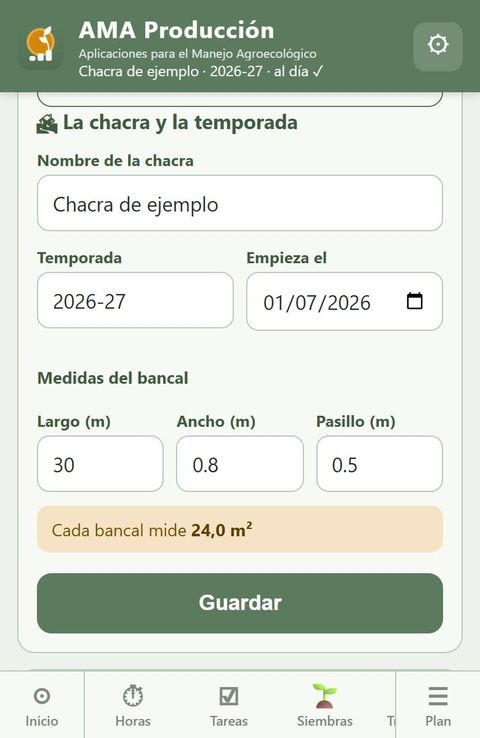
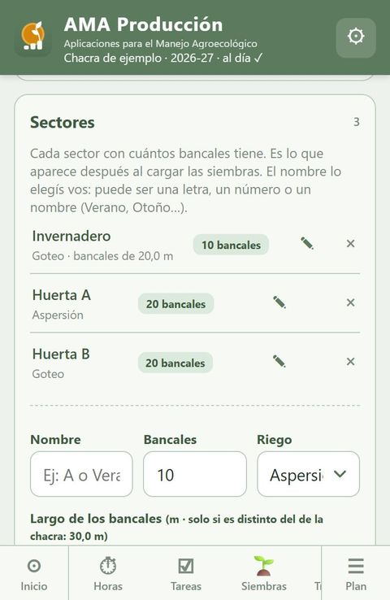
2. Cultivos y generaciones
En Plan → Cultivos se decide todo lo de cada cultivo:
- Elegí el cultivo. Si no está, abajo dice «¿No está en la lista? Agregar un cultivo»: se suma al catálogo común con sus días y su marco.
- Marco de plantación y rinde: vienen del catálogo; si acá se hace distinto, se cambia y queda para esta chacra.
- Las generaciones: cómo se siembra (almácigo o directa), la primera siembra, cuántas generaciones, cada cuántos días, cuántos bancales cada una y en qué sector.
La app calcula sola la superficie, las plantas, los kilos esperados y cuándo se cosecharía la última. No hay que cargar esos números aparte.
Cada generación se puede editar con ✎: fechas (mientras no se sembró), bancales, sector y variedad.
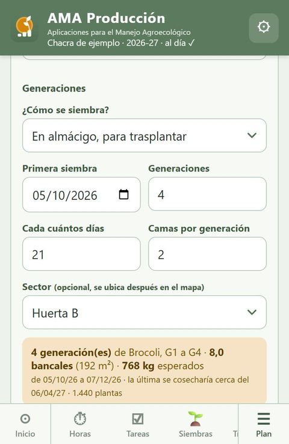
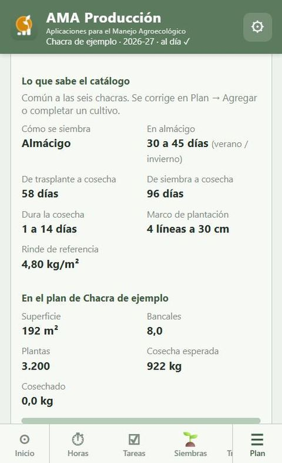
3. Plan estratégico (el calendario)
En la computadora, Plan → Plan estratégico muestra una barra por generación, con tres colores: en almácigo, en el bancal y en cosecha. La línea roja es hoy.
- Para correr una generación, arrastrá su barra. Se puede mientras no esté sembrada: es planificar.
- Una vez sembrada, ya no se arrastra: la barra arranca el día real de la siembra y lo que sigue se calcula solo. Cuando se registra el trasplante, se corre sola a esa fecha.
- La marca punteada muestra dónde estaba lo planificado, para ver de un vistazo cuánto se corrió.
- Lo ya hecho se ve firme; lo previsto, más claro.
- Tocá una barra para ver el detalle de la generación.
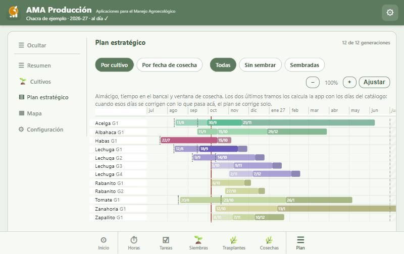
El detalle de una generación dice, etapa por etapa, qué se hizo, qué falta y cuánto se apartó cada cosa de lo planificado. Desde ahí también se puede registrar la siembra o el trasplante, y se abre la ficha del cultivo.
En el ejemplo, la acelga se sembró 2 días después de lo planificado y se trasplantó 15 días después.
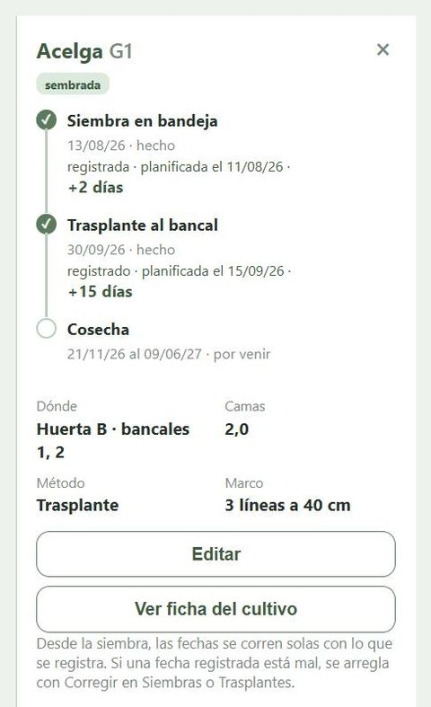
4. El mapa (dónde va cada cosa)
En la computadora, Plan → Mapa muestra los sectores como están en el campo. Las generaciones se arrastran a los bancales, y la app avisa si un bancal ya está ocupado en esas fechas. Los sectores se acomodan arrastrando su título.
El sector y los bancales de una generación también se cambian desde Cultivos → ✎, que funciona en el teléfono.
Desde el teléfono, Plan → Resumen tiene el plan de cada cultivo (kilos esperados y cosechados) y un croquis por sector con los bancales ocupados.
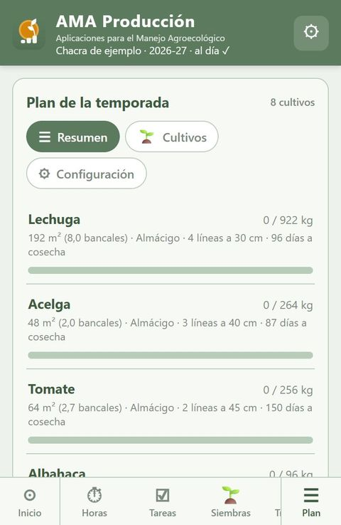
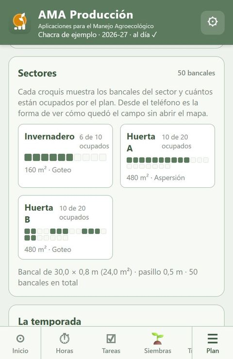
Durante la temporada: registrar
Lo que se registra es lo que se hizo, tal cual: la fecha real, el marco real, los kilos reales. La diferencia con el plan la calcula la app.
Inicio
La temporada de un vistazo: superficie planificada, kilos esperados y cosechados. Para hacer dice cuántas siembras y trasplantes tocan según el plan; tocalo y vas directo a la lista.
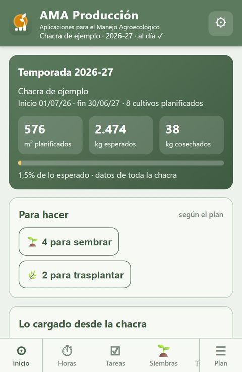
Siembras
Arriba está Para sembrar: las generaciones del plan que toca sembrar esta semana o que están atrasadas. Tocá una y el formulario se completa solo con el cultivo, la generación, la variedad y las bandejas que hacen falta para los bancales del plan.
- Revisá la fecha (es la de hoy) y cambiá lo que se haya hecho distinto.
- Bandejas: cantidad y alvéolos. Si se sembró en cajón (sin alvéolos), elegí «Cajón» y escribí los plantines contados o estimados.
- Plantines encargados o comprados: en «Plantines» elegí esa opción y poné la fecha en que llegan listos para trasplantar. La app guarda una siembra teórica.
- Siembra directa: se elige el sector y el bancal.
Abajo del formulario, la app muestra cuántos plantines son, cuántos pide el plan, el trasplante y la cosecha previstos, y cuántos días se apartó del plan.
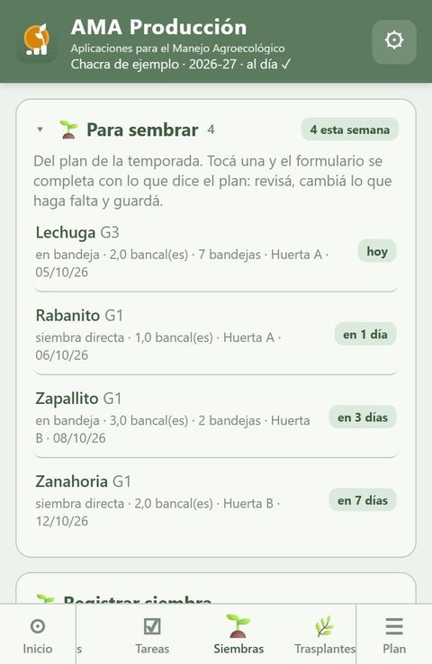
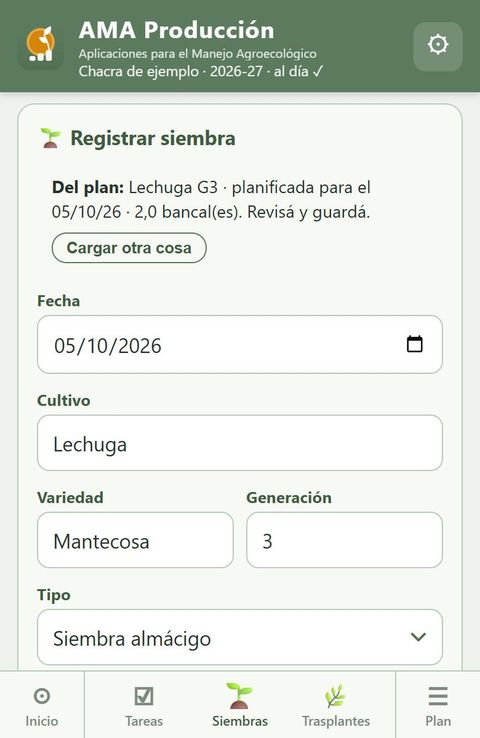
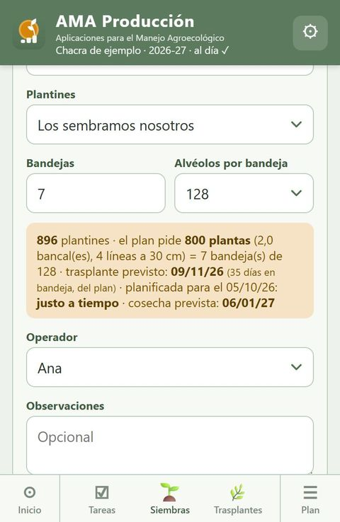
Trasplantes
Para trasplantar lista los almácigos que esperan, con los días que llevan en bandeja y cuándo se espera llevarlos al bancal: la siembra más los días que el plan le dio a esa generación.
Tocá uno: el formulario trae el cultivo, la generación y los bancales que el plan le asignó en el mapa. Se puede agregar o quitar bancales. Los plantines se calculan con el marco y el largo del bancal de cada sector, o se escriben si se contaron.
Al guardar, la barra del plan se corre sola a la fecha real del trasplante.
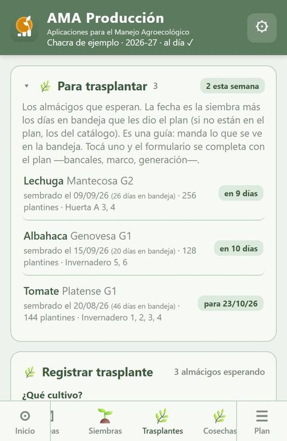
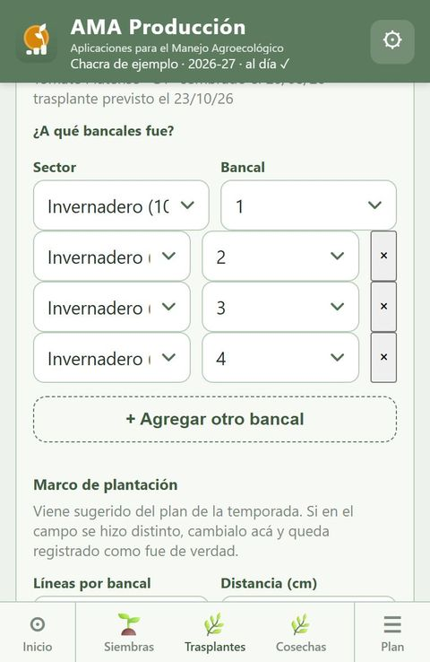
Cosechas
Los kilos totales de cada cultivo, de todos los bancales juntos. Hay dos formas:
- Lista: un renglón por cultivo; con + se suma otro.
- Pizarra: todos los cultivos del plan, como en la pizarra del galpón. Se escriben los kilos solo de lo que se cosechó.
Lo cosechado se va sumando contra los kilos esperados del plan.
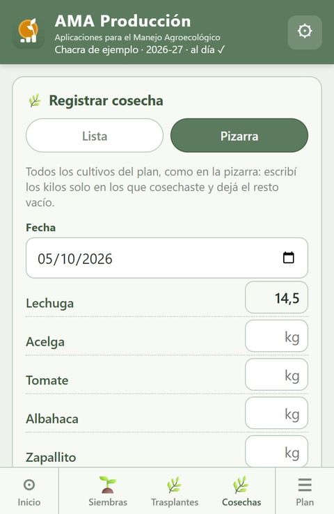
Horas de trabajo
Quién trabajó, en qué área y en qué actividad, cuántas horas y qué se hizo. Las áreas son seis, iguales para todas las chacras (Hortícola, Frutícola, Fungis, Comercialización, Administración y Mantenimiento), más las propias de cada una.
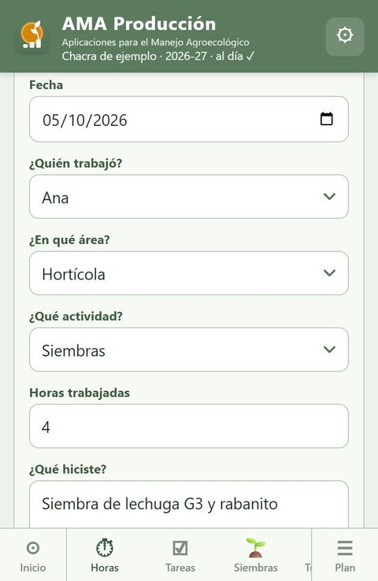
Tareas
Lo que hay que hacer, para cuándo, con qué importancia y quién lo toma. Se marca como hecha tocando el círculo. Hoy muestra todo por fecha; Por área junta las tareas de cada área con las horas que se le dedicaron.
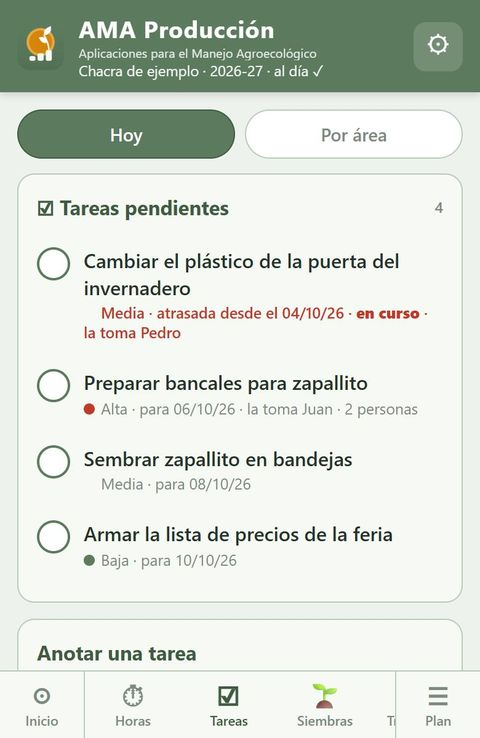
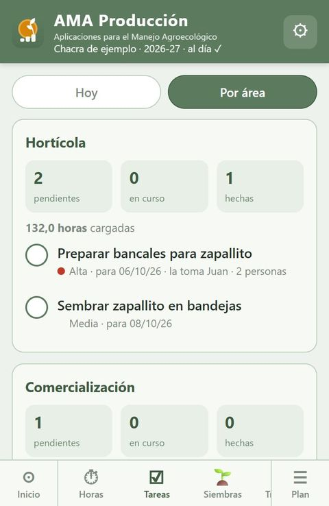
Corregir y borrar
Abajo de cada sección están los Últimos movimientos de toda la chacra. Con ✎ se corrige un registro y con 🗑 se borra.
Lo que se cambia queda copiado, como estaba, en la hoja Cambios de la planilla: un borrado por error se puede recuperar.
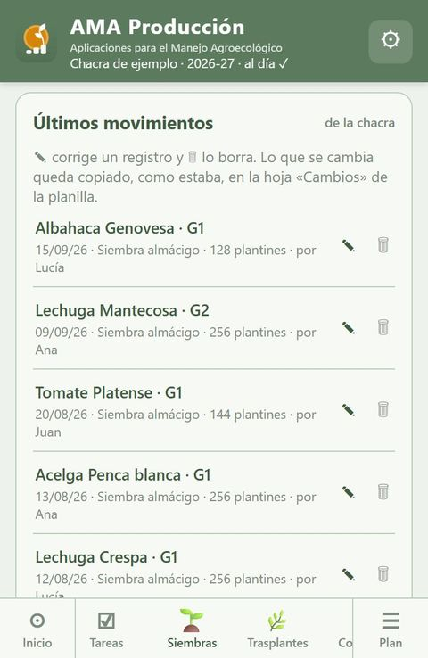
Qué estamos midiendo
Los «relojes» de la chacra: indicadores para saber cómo va la temporada y qué ajustar para la próxima.
Tres fechas para cada etapa
| Fecha | Qué es | Quién la cambia |
|---|---|---|
| Planificada | Lo que se decidió al planificar. Es la línea de base. | Se mueve mientras la etapa no se hizo; después queda fija. |
| Real | Lo que pasó, tal como se registró. | Solo se cambia con «Corregir». |
| Prevista | Para lo que falta: la última fecha real más los días del catálogo para esa estación. Si el plantín se encargó o se compró, el día que llega. Corregir el catálogo mueve todo lo que está en bandeja. | La calcula la app; nadie la escribe. |
Queda guardado en cada siembra y trasplante como «Diferencia plan».
Días reales en bandeja contra los del catálogo, solo con plantines propios.
En Inicio, en Plan → Resumen y en la ficha de cada cultivo.
En Tareas → Por área.
Un ejemplo. En la ficha de la lechuga de la chacra de ejemplo:
- La G1 se sembró 2 días después de lo planificado y se trasplantó 4 días después: eso es cumplimiento del plan.
- Estuvo 37 días en bandeja, 2 más de lo que dice el catálogo: eso es calibración. Si temporada tras temporada pasa lo mismo, conviene corregir el catálogo para esta zona.
Las dos medidas son distintas y no conviene mezclarlas: una habla de cómo nos organizamos, la otra de cómo responde el cultivo acá.
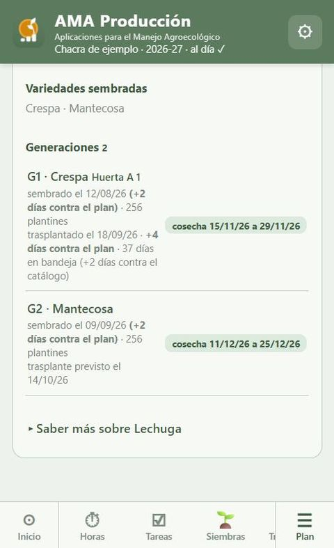
Consejos
- Cargá el mismo día. Al día siguiente ya no se recuerda bien cuántas bandejas o a qué bancal fue cada cosa.
- Entrá por «Para sembrar» y «Para trasplantar». Así lo registrado queda atado a su generación del plan, y las cuentas y las barras se corren solas.
- Cuidá el número de generación. Si una siembra queda con el número de otra, el plan las confunde. Si te equivocaste, corregilo con ✎.
- Si el plan cambió antes de sembrar, corré la barra en el Plan estratégico. Si ya se sembró, no hace falta: se acomoda sola con lo que se registra.
- Una vez por semana, mirá el plan estratégico con el equipo: qué se atrasó, qué viene, qué bancales se liberan.
- Al cerrar la temporada, revisá los días reales de cada cultivo contra el catálogo y ajustá lo que se repita.
- ¿Algo no anda o falta algo? En Inicio está «¿Qué mejorarías de la app?».
Preguntas frecuentes
¿Por qué dice «atrasado» algo que todavía no toca?
«Para trasplantar» cuenta desde la siembra real más los días en bandeja que el plan le dio a esa generación. Si la siembra se registró con una fecha equivocada, o con otro número de generación, la cuenta sale mal: corregí la siembra con ✎ en Siembras.
¿Puedo mover una generación que ya sembré?
No hace falta. Desde la siembra, la barra se calcula sola con lo que se registra. Cuando cargues el trasplante, se corre a esa fecha. Lo planificado queda como referencia para comparar.
Encargamos los plantines y no sabemos cuándo se sembraron
En Siembras, elegí «Encargados a otra persona» o «Comprados» y poné la fecha en que llegan listos para trasplantar. La app guarda una siembra teórica y no la usa para medir días en bandeja.
Sembramos en cajones, sin alvéolos
En «Alvéolos por bandeja» elegí «Cajón» y escribí los plantines, contados o aproximados.
No hay señal en el campo
Cargá igual. Queda guardado en el teléfono y se envía solo cuando vuelve la conexión. No borres los datos del navegador mientras diga «por enviar».
No veo el Plan estratégico ni el Mapa en el teléfono
Necesitan pantalla ancha y se usan desde la computadora. En el teléfono, Plan → Resumen muestra el plan y un croquis de los sectores, y Cultivos → ✎ permite cambiar fechas, sector y bancales.
Me equivoqué al cargar algo
En «Últimos movimientos» de esa sección, ✎ para corregir o 🗑 para borrar. Queda copia de cómo estaba en la hoja Cambios.
Un cultivo no está en la lista
En Plan → Cultivos, «¿No está en la lista? Agregar un cultivo». Se suma al catálogo común, para todas las chacras.